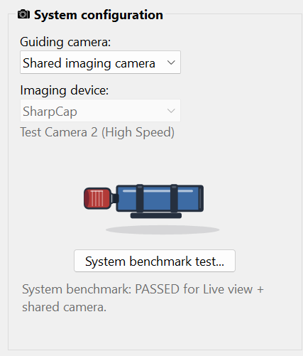
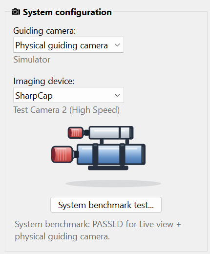

Gear & rig requirements
Choose how imaging and guiding will share the camera and mount.
The equipment chain
HelioMaker coordinates lunar imaging through SharpCap and lunar tracking/guiding through its custom PHD2 integration. Prepare SharpCap Pro and the matching custom PHD2 installation before connecting the rig. The lunar preferences currently offer SharpCap as the imaging device.
Use an imaging camera and configuration that pass the lunar System benchmark. A working preview alone does not verify long exposures, HDR transitions or saved-file delivery.
| Arrangement | Setup | What to test |
|---|---|---|
| Shared imaging camera | Choose Shared imaging camera in Plan preferences and Virtual Planetary Camera in PHD2. | Imaging and guide work use the same camera. Verify the time left for guide work between brackets, especially during totality. |
| Separate guide camera | Choose Physical guiding camera and select that physical camera in PHD2. | Set and test its own bright-Moon and dark-eclipse exposures. Confirm its field of view and calibration. To keep guide corrections from moving the mount during an exposure, tick Pause guiding during exposures; see guiding between sets. |
| Guiding off | Set PHD2 guiding: Off. | The mount must preserve framing without guide corrections. Physical capture still requires lunar mount preparation through PHD2. |


Choose the image configuration before testing
In Plan preferences, select file format, data format, binning and capture resolution. The available camera choices depend on the connected or cached camera capabilities. Retest if the benchmark status no longer qualifies the selected setup.
The benchmark measures the equipment with fixed probe exposures. Changes to base exposure, gain or guiding settings keep a valid result for the same camera, resolution, data format and binning. Plan timing is recalculated separately; a longer exposure may require a longer imaging interval.
Allow enough storage and power for a multi-hour session. When guiding pauses during sets, with the shared camera or with Pause guiding during exposures, the preflight checklist warns when a selected phase leaves too little time for guiding between sets. Resolve that with cadence, the exposure ceiling, the Guiding time policy or a different camera arrangement before relying on the plan.